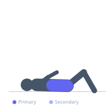

Exercise guide / Seated Machine Abdominal Crunch
Seated Machine Abdominal Crunch
The seated abdominal crunch machine guides the torso through a fixed arc of spinal flexion against a selectorized or plate-loaded resistance pad, providing a beginner-friendly way to load the rectus abdominis without requiring hip flexor coordination or balance. The fixed movement path isolates the spinal flexion component effectively, and the machine's adjustable resistance allows precise progressive overload. It is a useful tool for individuals learning abdominal training or those rehabilitating from injuries that limit floor-based core work.
Primary muscles
rectus abdominis
Secondary muscles
internal oblique
external oblique
Equipment
Chest Press Machine


Starting position
- Sit in the machine with the back against the pad and feet secured under the ankle rollers. Grasp the handles above the shoulders. Position the chest pad so it contacts the upper chest.
Setup
- Adjust the seat height so the pivot point of the machine aligns roughly with the hip joint. Select an appropriate weight.
Steps
- Step 1: Sit tall with a neutral spine. Grip the handles and brace lightly.
- Step 2: Flex the spine forward, pulling the chest pad downward and toward the knees. Focus on rounding the lumbar spine rather than simply hinging forward.
- Step 3: Pause at the bottom of the movement, fully contracting the abs.
- Step 4: Return slowly to the start position, maintaining control against the resistance.
- Step 5: Repeat without fully releasing tension at the top.
Coaching cues
- Round the lower back — do not just lean forward
- Keep the neck neutral — do not crane forward
Breathing
- Exhale on the crunch forward. Inhale on the controlled return.
Range of motion
- Full arc of motion as guided by the machine — from spine neutral to full flexion.
Tempo
- 2-1-2-0. Slow and controlled. No momentum.
Common mistakes
- Using momentum to swing the torso down rather than contracting the abs
- Pulling with the arms on the handles rather than initiating from the abdominals
Safety
- Avoid very heavy loads that force spinal flexion beyond comfortable range
Training
- hypertrophy: 12–20 reps
- endurance: 20–30 reps
- hypertrophy: 3–4 sets
- Rest: {'hypertrophy': 60}